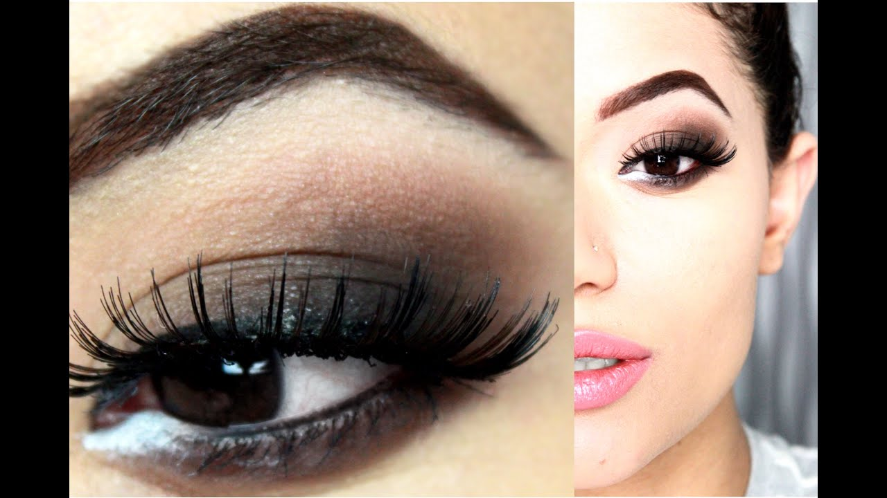

Dite addio alle occhiaie con questi 4 contorno occhi!
- Gli occhi di Norman: Quel J’accuse che non lascia scampo
Ogni giorno i nostri occhi sono sottoposti a stress che possono provocare una serie di disturbi come l'Occhio secco e l'Occhio rosso. I prodotti Isomar Occhi sono appositamente studiati per una risposta mirata ai principali e più frequenti disturbi oculari. - Ottica Bianchi – La qualitá nei tuoi occhi
Dieci anni dal sacrificio di mio figlio, dieci anni di discesa agli inferi nel silenzio di buona parte della stampa e di tutte le istituzioni che dovrebbero implorare il perdono di quegli occhi di bambino, il cui j’accuse non lascia scampo ai filistei della cultura e ai mercanti del Tempio della politica italiota. - Shop Risparmio Casa - VENUS Detergente Bifase Viso e Occhi ...
Introduzione all’ ipermetropia L’ ipermetropia è una ametropia oculare in cui l’ immagine di un oggetto posto in lontananza va a fuoco dopo la retina, anzi che su di essa, a causa del potere diottrico dell’ occhio insufficiente, o del bulbo oculare troppo corto. - Isomar - Sollievo Occhi Rossi Gocce Oculari, Occhi di ...
L'innovativa formula bi-fase specifica per il trucco waterpproof deterge con delicatezza e strucca perfettamente viso e occhi. L'Acqua Virginiana, ad azione decongestionante, elimina le tossine, rinfresca, tonifica e risveglia lo splendore naturale del vi - Come rilevare problemi agli occhi in un 2-mese-vecchio ...
I migliori prodotti cosmetici per il contorno occhi in vendita su AMICAFARMACIA. Trattamenti contro le borse e occhiaie, struccanti e make up. Scopri subito le OFFERTE Bionike, Lierac, Avene, Vichy. - link cattolici: Alzo gli occhi verso il cielo
Gli occhi parlano. Fidatevi di me, non sono pazzo. Mento, sono pazzo. Ma gli occhi parlano, dicono molto, non stanno zitti un attimo. A volte ti feriscono, a volte ti fanno innamorare, con quelle loro dolci maniere. È incredibile come così, con tanta spontaneità riescano a trasmettere rabbia, felicità, addii e dei vaffanculo. Gli occhi parlano - Isomar - Prodotti Igiene Quotidiana Naso Orecchie Occhi ...
Tenere al sicuro le tue informazioni personali è la nostra priorità assoluta. Ti informiamo che abbiamo aggiornato la nostra politica sulla privacy secondo il regolamento europeo sulla protezione dei dati che entrerà in vigore il 25 maggio 2018 (GDPR) - Dite addio alle occhiaie con questi 4 contorno occhi!
Palette occhi ultra-pigmentata – multi-texture personalizzabili – base, ombretti, top coat scintillante, gel creatore di eyeliner 48,98 € Backstage Eye Prime - 10+ "Andrea Occhi" profiles | LinkedIn
Roma, occhi fissi su Chiesa Share; 3 del 06 settembre 2020 alle 10:36. 120 Il futuro di Federico Chiesa alla Fiorentina, al momento, è sempre in bilico. Le pretendenti, con il Milan in pole ... - Occhi
View the profiles of professionals named "Andrea Occhi" on LinkedIn. There are 10+ professionals named "Andrea Occhi", who use LinkedIn to exchange information, ideas, and opportunities.

Forum
Home Bellezza Bellezza Make-up Capelli #BOTY 2017 Skin care Profumi Unghie Forum Bellezza Beauty Gallery Tatuaggi Shopping Tutti gli articoli Moda Moda Trend Consigli di Stile Scarpe, Borse e Accessori Forum Moda Sfilate Fashion Gallery Shopping Tutti gli articoli Mamma Mamma Concepimento Essere genitori Gravidanza Parto Neonati Bambini Forum gravidanza Forum bebè Shopping Tutti gli articoli Mamme in Auto Amore e Psicologia Amore e Psicologia Sesso Coppia Psicologia Forum Amore Forum Sessualità Test Shopping Tutti gli articoli In forma In forma Diete e Alimentazione Benessere Sport e Fitness Forum alimentazione corretta e dieta Shopping Tutti gli articoli Oroscopo Oroscopo Astrologia Numerologia Tarocchi & Oracoli Forum astrologia Tutti gli articoli Matrimonio Matrimonio Abiti da sposa Trucco e acconciatura Accessori sposa Forum Matrimonio Idee e Ispirazioni Tutti gli articoli News & Gossip News & Gossip News Star e Gossip Tutti gli articoli Cucina Cucina Video ricette con Tutto Gusto Ricette e consigli Shopping Tutti gli articoli Provato da Voi Lifestyle Lifestyle Casa Tempo libero Lusso Tutti gli articoli Forum Cucina Forum Tempo Libero Shopping Women Empowerment Women in Communication Tutti gli articoli Video Video Bellezza Fitness Moda Cucina Mamma Attualità Tutti gli articoli Albums Skin care Cellulite Cavitazione Depilazione Nail art Sopracciglia Tutti gli articoli
Home / Bellezza / Skin Care
BellezzaQuattro creme contorno occhi che illumineranno il vostro sguardo!
di Jessica Genco Creato il 16 luglio 2020 © Getty ImagesOcchiaie? Borse sotto gli occhi? Rughe d'espressione? Noi di alfemminile abbiamo in serbo per voi una selezione delle 4 migliori creme contorno occhi per accendere il vostro sguardo!
Giornate lunghe, notti brevi e un cattivo stile di vita tolgono freschezza e luminosità ai vostri occhi , che ora mostrano evidenti occhiaie e/o borse ? È giunto il momento di trovare un prodotto per la cura della pelle in grado di ridurre questi segni indesiderati: e a quale ricorrere se non a un ottimo contorno occhi ? Scoprite quali sono i quattro più efficaci per ottenere uno sguardo da cerbiatta!
Il tuo browser non può visualizzare questo video
Video di Domenica MelilloPerchè ricorrere a un contorno occhi?
Al mattino , quando ci si sveglia, più che in qualsiasi altra ora del giorno, non è raro avere un contorno occhi più gonfio e scur o del solito, poiché la posizione che assumiamo da sdraiati favorisce la formazione di un edema che rallenta la circolazione . È per questo motivo che ricorrere a un buon contorno occh i può essere la nostra unica e definitiva salvezza . Questo prodotto, infatti, aiuta a decongestionare la zona intorno agli occhi, fornendo una buona dose di idratazione , necessaria per dare luminosità allo sguardo , ma anche per rallentare la comparsa di linee sottili e rughe . Attenzione, un piccolo consiglio : tenete il prodotto in frigorifero poiché il freddo aiuta a stimolare il suo effetto vasodilatatore.
Con il contorno occhi Avène dite addio a rossori e palpebre gonfie!
Composto per il 68% da acqua termale Avène , questo trattamento è anti-irritante , anti-radicali liberi e allevia la pelle idratandola . Inoltre, decongestiona e lenisce la zona sensibile intorno agli occhi e ne rispetta la fragilità , essendo privo di profumi e conservant i. Applicando questo contorno occhi, non solo ridurrete occhiaie, borse e palpebre gonfie , ma riuscirete persino a eliminare i rossori e a liberarvi da quell'odiosa sensazione di "pelle che tira" che contraddistingue la zona. Nota di merito a parte: dopo l'applicazione del prodotto, potrete truccarvi senza problemi dal momento che non unge nè appiccica.
Acquistalo in offerta su Amazon a meno di 15 euro!
Con la doppia azione idratante, il contorno occhi La Roche Posay è il perfetto antidoto alle borse!
Il trattamento Intense Eye Hydraphase di La Roche Posay fa al caso vostro se volete combattere le linee sottili dovute alla disidratazione , il gonfiore e le palpebre gonfie , ma anche per reidratare e levigare il contorno occhi grazie all'acido ialuronico frammentato contenuto al suo interno. La sua efficacia è dovuta in massima parte a due ingredienti speciali: caffeina e acqua termale , il mix perfetto per decongestionare l'area interessata. Inoltre, vi consigliamo di utilizzarlo prima del correttore poiché ne facilita l'applicazione.
Compralo qui, la spedizione è gratis!
Illumina lo sguardo con L'Oréal revitalift laser X3!
Pensavate che correggere le rughe fosse un'impresa impossibile? Forse perchè non avete mai provato L'Oréal revitalift laser X3, un concentrato di acido ialuronico frammentato dai poteri miracolosi. Questo ingrediente, infatti, distende la pelle e riduce notevolmente le rughe intorno agli occhi. Già dopo qualche uso, le borse appariranno significativamente sgonfie grazie all'azione della caffeina contenuta al suo interno, che agisce immediatamente per riattivare la microcircolazione . Inoltre, l 'applicatore metallico donerà alla pelle un senso di frescezza immediato!
Compralo adesso e risparmierai più di 3 euro!
Filorga Optim Eyes sarà il vostro migliore alleato contro le occhiaie scure!
Il trattamento Filorga Optim Eyes aiuta a combattere tutti i fattori che tendono a marcare la zona dell'occhio. Applicandolo con costanza, il contorno occhi apparirà evidentemente levigato e le occhiaie perderanno quella tonalità scura che - ahimè - le contraddistingue. Inoltre, i peptidi contenuti al suo interno favoriscono la microcircolazione , riducendo così il gonfiore di occhi e borse. Senza considerare che la consistenza fresca e cremosa del prodotto rende decisamente piacevole la sua applicazione, lasciando la pelle super idratata!
Lo trovi su Amazon con uno sconto del 35 %!
Il tuo browser non può visualizzare questo video
Tutti i colori e le sfumature dell'universo femminile. Rimani sempre aggiornata sulle ultime novità! Trovaci su Pinterest! ti potrebbe interessare anche Depilazione a luce pulsata: cos'è e come funziona di Valentina Grassini Capelli crespi: i migliori prodotti per una chioma secca e sfibrata di Jessica Genco Luce pulsata: una dermatologa ci ha detto tutto quello che c'è da sapere su questo trattamento di Marianna Barracane Miglior epilatore: ecco come sceglierlo di Marianna Barracane Buono per te e buono per l'ambiente! Ecco i cosmetici per la tua eco-routine di Marianna Barracane Beauty Routine 100% Ecologica: ecco tutto il necessario di Marianna Barracane Trucco occhi azzurri: 25 idee per abbinare i colori di Linda Montemurro Le migliori creme antirughe: ecco le più efficaci di Marianna Barracane Come strizzare i brufoli: gli errori da evitare di Linda Montemurro I solari top dell'estate 2020 di Marianna Barracane54k
154k
97k
14k
26k
Copyright © 1999-2020


Mauris vulputate dolor
Rutrum fermentum nibh in augue praesent urna congue rutrum.
Etiam posuere